Cosmic Scale
How big everything is: a universe size comparison in 3D.
Real data from NASA and JPL
Cosmic Scale shows how big everything is. Orrery shows where everything is, today. Real sizes, real orbits, real photographs. Nothing made up.
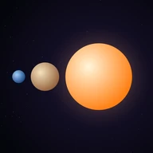
What you just scrolled through is a small piece of the app. Cosmic Scale lines up 179 real objects in 3D, from a 490-metre asteroid to the observable universe, each one at its true size.
Read on the site
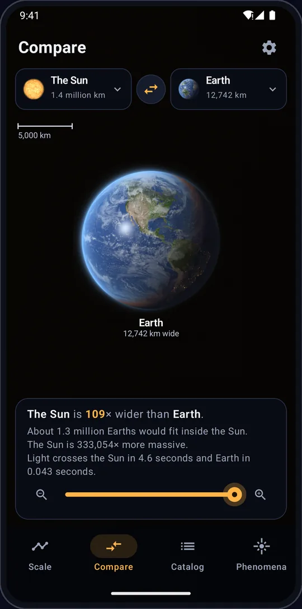
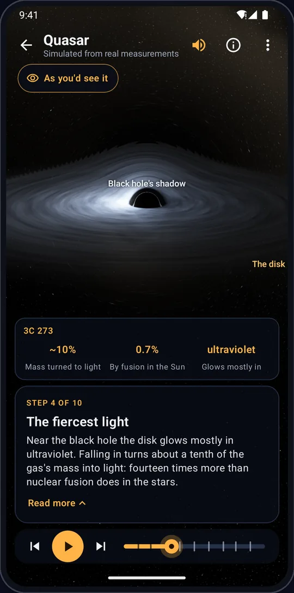
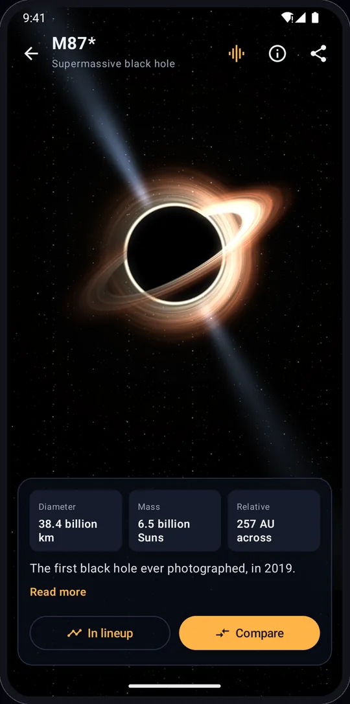
Each planet is at its real angle around the Sun for this date (NASA JPL orbital elements, 1800 to 2050). The spacing of the orbits is squeezed and the planets are drawn larger, so everything fits on a screen. The stars behind are the real sky.
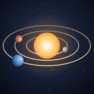
Orrery draws the Sun, the planets, their moons and Halley's Comet where they are right now, turning and tilted as they really are. Spin a world under your finger, or run time forward by centuries.
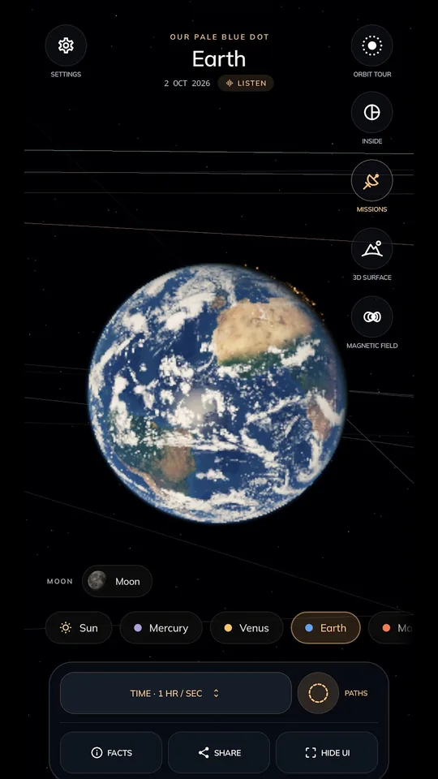
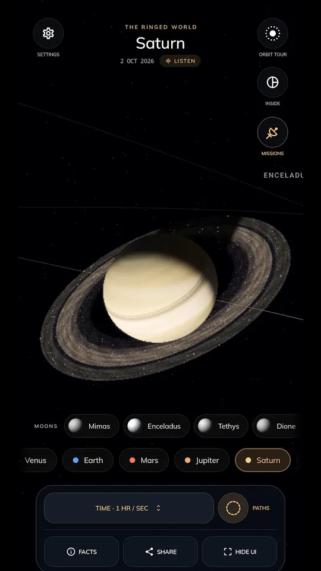
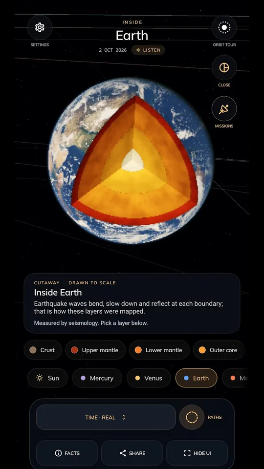
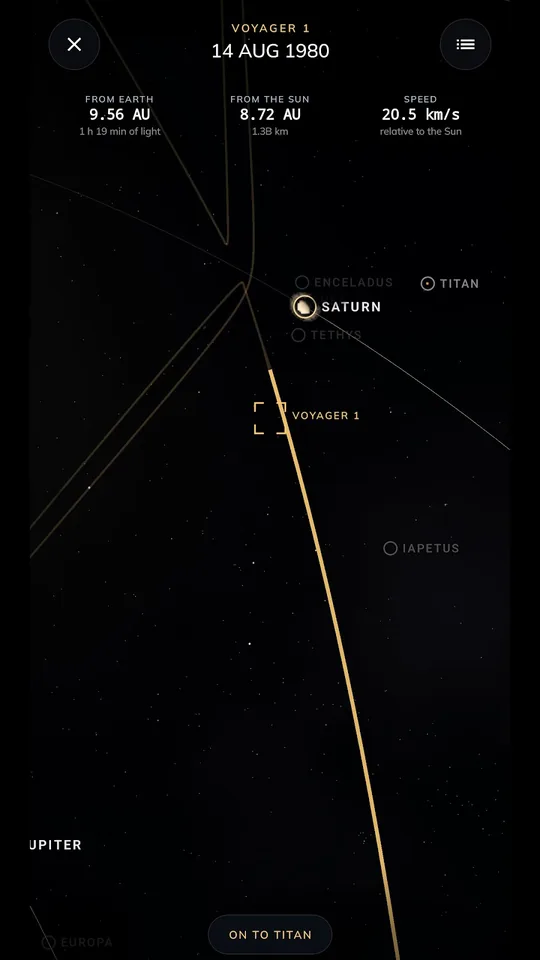
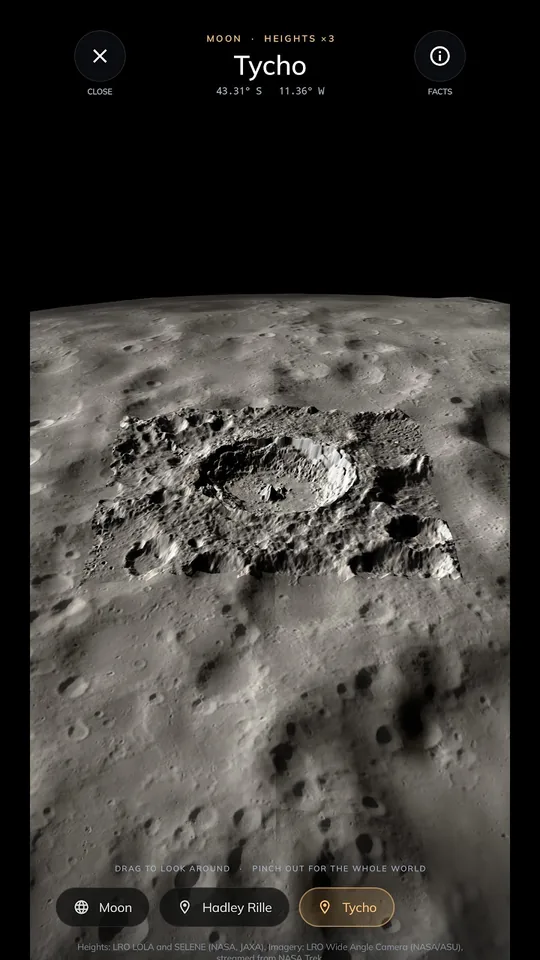
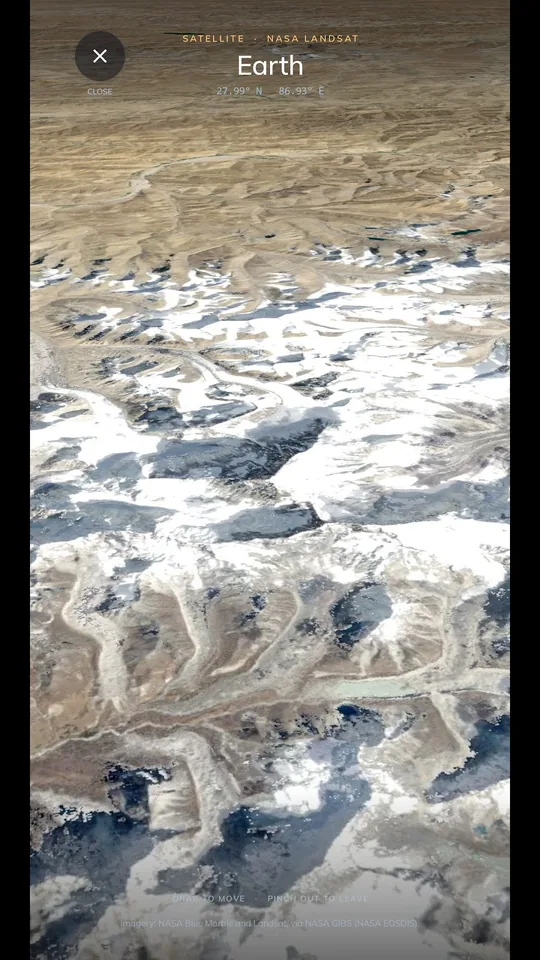
Both apps are free to explore, with no account and no sign-up.
How big everything is: a universe size comparison in 3D.
Where everything is: the solar system in 3D, as it is today.